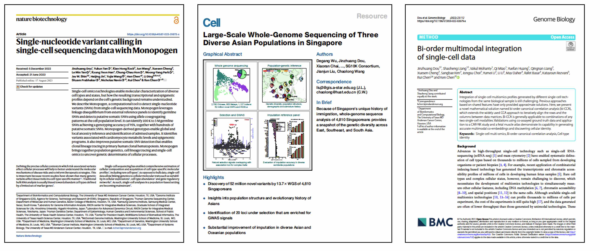

You can find all publication on google scholar

Monopogen:
single nucleotide variant calling from single cell sequencing.
J Dou, Y Tan, KH Kock, J Wang , X Cheng, LM Tan, KY
Han, CC Hon, WY Park, JW Shin, H Jin, H Chen, L Ding, S Prabhakar, N
Navin. K Chen. Nature Biotechnology 2023.
see Research
Highlight in Nature Genetics.
Large-scale
whole-genome sequencing of three diverse Asian populations in
Singapore.
D Wu*, J Dou*, X Chai*, C Bellis,
A Wilm, C.C. Shih, W.W.J Soon, N Bertin, C.B Lin, C.C Khor, M DeGiorgio,
S.S Cheng, L Bao, N Karnani, W Hwang, S Davila, P Tan, A Shabbir, A Moh,
E Tan, J.N Foo, L.L Goh, K.P Leong, R.S.Y Foo, C Lam, A Richards, C.Y
Cheng, T Aung, T Wong, H Ng, M Ackers-Johnson, E Aliwarga, K Kim Ban, D
Bertrand, J Chambers, D Hui Chan, C Li Chan, M Chee, M Chee, P Chen, Y
Chen, E Chew, W Chew, L Chiam, J Chong, I Chua, S Cook, W Dai, R
Dorajoo, C Foo, R Goh, A Hillmer, I Irwan, F Jaufeerally, A Javed, J
Jeyakani, J Koh, J Koh, P Krishnaswamy, J Kuan, N Kumari, A Lee, S Lee,
S Lee, Y Lee, S Leong, Z Li, P Li, J Liew, O Liew, S Lim, W Lim, C Lim,
T Lim, C Lim, S Loh, A Lok, C Chin, S Majithia, S Maurer-Stroh, W Meah,
S Mok, N Nargarajan, P Ng, S Ng, Z Ng, J Ng, E Ng, S Ng, S Nusinovici, C
Ong, B Pan, V Pedergnana, S Poh, S Prabhakar, K Prakash, I Quek, C
Sabanayagam, W See, Y Sia, X Sim, W Sim, J So, D Soon, E Tai, N Tan, L
Tan, H Tan, W Tan, M Tandiono, A Tay, S Thakur, Y Tham, Z Tiang, G Toh,
P Tsai, L Veeravalli, C Verma, L Wang, M Wang, W Wong, Z Xie, K Yeo, L
Zhang, W Zhai, Y Zhao, J Liu, C Wang. Cell 2019
(Cover story)
Metabolic
competition is an important driver of tumor resistance after CAR NK cell
therapy and can be overcome by cytokine engineering.
L Li*, V
Mohanty*, J Dou*, Y Huang*, P P. Banerjee, Q Miao, J
Lohr, T Vijaykumar, B Knoechel, R Basar, S Liang, M Kaplan, M Daher, E
Liu, L Muniz-Feliciano, T J. Laskowski, D Marin, S Mielke, R E. C,
Elizabeth J. Shpall, K Chen, K Rezvani. Science Advance
2023
Bi-order
multimodal integration of single-cell data.
J
Dou*, S Liang*, V Mohanty, X Cheng, S Kim, J Choi, Y Li, K
Rezvani, R Chen, K Chen. Genome Biology 2022
Using
off-target data from whole-exome sequencing to improve genotyping
accuracy, association analysis, and polygenic risk prediction.
J Dou*, D Wu*, L Ding, K Wang, M Jiang, X Chai, D.
Reilly, E Tai, J Liu, X Sim, S Cheng, C Wang. Brief in
Bioinformatics 2020
Estimation
of kinship coefficient in structured and admixed populations using
sparse sequencing data.
J Dou, B Sun, X Sim,
I Irwan, J D Hughes, D F Reilly, E Tai, J Liu, C Wang. PLoS
Genetics 2017
Whole-genome
restriction mapping by “subhaploid”-based RAD sequencing: an efficient
and flexible approach for physical mapping and genome scaffolding.
J Dou, H Dou, C Mu, L Zhang, Y Li, J, T Li, X Hu,
S Wang, Z Bao. Genetics 2017 (Cover
story)
Evaluation of
the 2b-RAD method for genomic selection in scallop breeding.
J Dou, X Li, Q Fu, W Jiao, Y Li, T Li, Y Wang, X Hu, S
Wang, Z Bao. Scientific Report 2016
High-resolution
linkage and quantitative trait locus mapping aided by genome survey
sequencing: building up an integrative genomic framework for a bivalve
mollusc.
W Jiao*, X Fu*, J Dou*, H Li, H Su,
J Mao, Q Yu, L Zhang, X Hu, X Huang, Y Wang, S Wang, Z Bao. DNA
Research 2013 (Editor’s choice)
RADtyping:
an integrated package for accurate de novo codominant and dominant RAD
genotyping in mapping populations.
X Fu*, J
Dou*, J Mao, H Su, W Jiao, L Zhang, X Hu, X Huang, S Wang, Z
Bao. PLoS ONE 2013
Reference-free
SNP calling: improved accuracy by preventing incorrect calls from
repetitive genomic regions.
J Dou, X Zhao, X
Fu, W Jiao, N Wang, L Zhang, X Hu, S Wang, Z Bao. Biology
Direct 2012
Cord
blood characteristics determine the efficacy of allogeneic IL-15 armored
CAR-transduced natural killer cells against CD19-positive B cell
tumors.
D Marin*, Y Li*, R Basar*, H Rafei*, M Daher*,
J Dou, V Mohanty, M Dede, Y Nieto,N Uprety,S Acharya,E
Liu ,J Wilson, P Banerjee, H Macapinlac, C Ganesh, P Thall, R Bassett, M
Ammari, S Rao, Cao,M Shanley, C Hosing,P Kebriaei, L Nastoupil, C
Flowers, S Moseley,P Lin, S Ang, U Popat, M Qazilbash,R Champlin, K
Chen, E Shpall, K Rezvani. Nature Medicine
2023
KLF5
governs sphingolipid metabolism and barrier function of the skin.
Y Lyu, Y Guan, L Deliu, E Humphrey, J Frontera, Y Yang, J
Dou,…,K Chen,P Nagarajan, Y Ge. Genes
Development 2022
Systematic
decomposition of sequence determinants governing CRISPR/Cas9
specificity.
R Fu*, W He*, J Dou, O D.
Villarreal, E Bedford, H Wang, C Hou, L Zhang, Y Wang, Y Chen, X Gao, M
Depken, H Xu. Nature Communications 2022
Single-cell
manifold-preserving feature selection for detecting rare cell
populations.
S Liang, V Mohanty, J Dou, Q
Miao, Y Huang, M Muftuoglu, L Ding, W Peng, K Chen. Nature
Computational Science 2021
Single-cell
copy number lineage tracing enabling gene discovery.
F Wang, Q
Wang, V Mohanty, S Liang, J Dou, J Han, D Conterno
Minussi, R Gao, L Ding, N Navin, K Chen. Genome Biology
2021
Genetic
Admixture in the Culturally Unique Peranakan Chinese Population in
Southeast Asia.
D Wu, P Li, B Pan, Z Tiang, J
Dou, I Williantarra, A Pribowo, R Nurdiansyah, SG Peranakan
Project, R SY Foo, C Wang. Molecular Biology and
Evolution 2021
Generation
of glucocorticoid-resistant SARS-CoV-2 T cells for adoptive cell
therapy.
R Basar, N Uprety, E Ensley, M Daher, K
Klein,…,J Dou,..,K Rezvani. Cell
Report 2021
Targeting the
v integrin-TGF-beta axis improves natural killer cell function against
glioblastoma stem cells.
H Shaim, M Shanley, R Basar, M
Daher,…, J Dou,…,K Chen, F Lang, E Shpall, A
Heimberger, K Rezvan. The Journal of Clinical
Investigation 2021
De
novo identification of essential protein domains from CRISPR-Cas9
tiling-sgRNA knockout screens.
W He, L Zhang, O Villarreal, R
Fu, E Bedford, J Dou, A Patel, M Bedford, X Shi, T
Chen, B Bartholomew, H Xu. Nature Communications
2019
Scallop genome
reveals molecular adaptations to semi-sessile life and neurotoxins.
Y Li, X Sun, X Hu, X Xun, J Zhang, X Guo,…, J
Dou,…, Z Jiang, R Li, S Wang, Z Bao. Nature
Communications 2017
Scallop
genome provides insights into evolution of bilaterian karyotype and
development.
S Wang, J Zhang, W Jiao, J Li, X Xun, Y
Sun,…,J Dou,…, Z Jiang, D Chourrout, R Li, Z Bao.
Nature Ecology and Evolution 2017
* denotes equal contributions, # corresponding authors